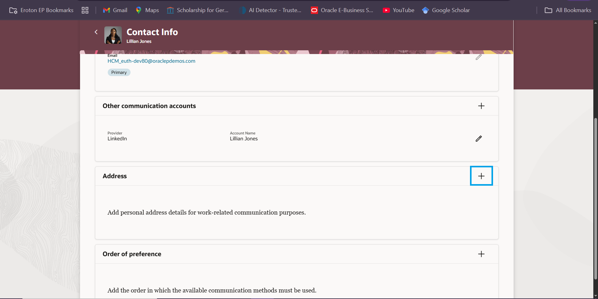
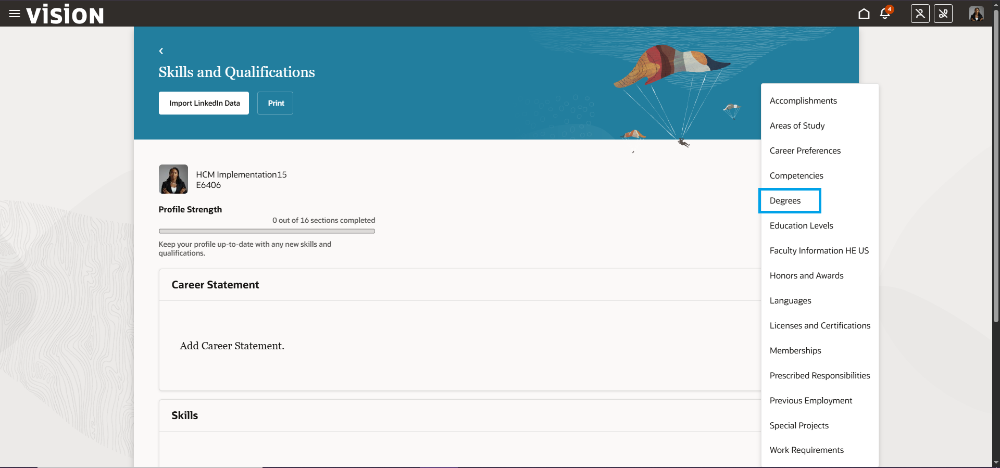
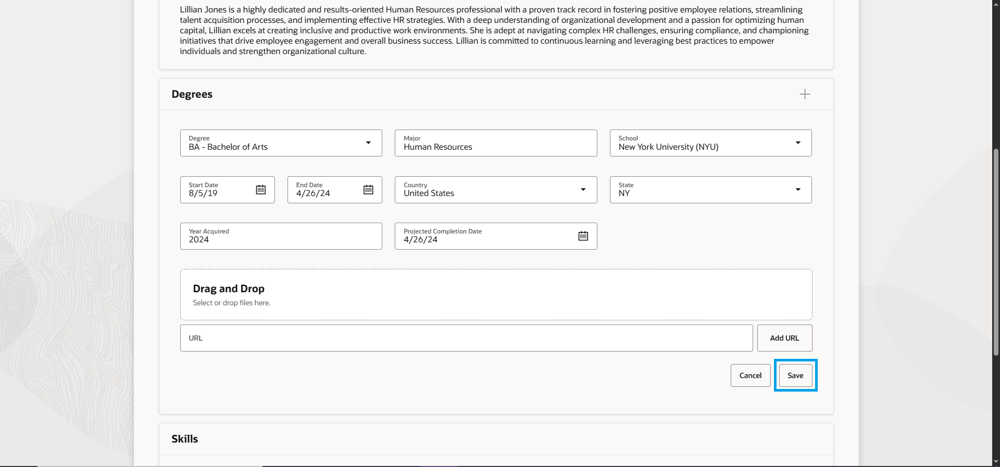
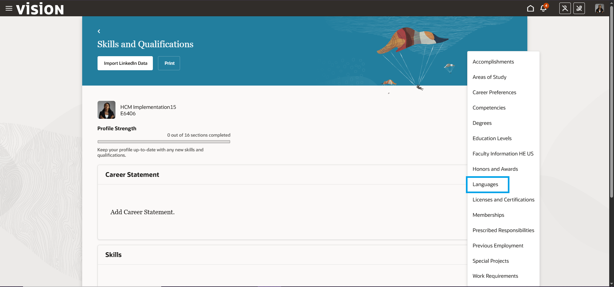
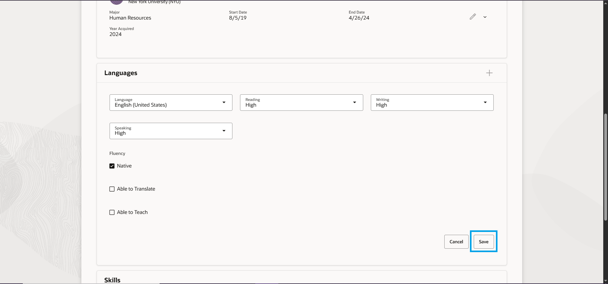

Employee Profile Management
How to Update Personal Information
To access your personal information, Mavigate to the me tab on the homepage and select the Personal Information tile.

On the Personal Information homepage, click on the Personal Details tab.

You are now on the Personal Details landing page.

Updating Name
01 - Click on the edit button in the Name section.

02 - Edit name add the change date then click on save.

Updating Demographic Information
0 - Click on the edit button in the Demographic Information section.

02 - Edit the information then click on save.

Updating Contact Information
01 Return to the Personal Information homepage, and click on Contact Info.

02 - On the Contact Info you can edit your phone number and email adress using the edit button.

03 - Scroll down too the Address Section.
04 - fill in the information then click on save.

How to Update Public Information
To access your public information, navigate to the Me tab on the homepage and select the Directory tile.

On the directory homepage, click on the My Public Info tab.

You have now arrived at your public info page: Your public information contains less sensitive personal details that are visible to all employees across the organization.

Adding a Photograph
01 - To add a photograph to your public info, select the Actions button located at the top right-hand side of the page and choose Change Photo from the drop-down list.

02 - Click on the Choose File button. This will open a file explorer window. Select the image that you wish to use as your profile picture and then select the Open button.

03 - When the image has been added, You can resize the image using the highlight window. Once you are satisfied with the image, select the Save and Close button.

Adding a Public Message
The Public Message is a field for employees to add messages for colleagues.
01 - On the Public Info page, click on the Add button located at the top right-hand corner on the Public Message field.

02 - Enter the Start date of the message (This is mandatory).

03 - Enter the Expiration date (This is not mandatory).

04 - Add the message then click save.

Adding Contact Info
Details of an employee's viewable contact information such as your email address, telephone number, and location.
01 - Click on the Edit button at the top right corner of the Contact Info field.

02 - On the Contact Info page under Communication click the Add button.

03 - the drop-down list gives the employee variouse options to chose from. For this example we will choose the Other Communication accounts.

04 - Select a Social Provider.

05 - Type in the Account Name and Submit

Adding About Me
A section used to display work related information.
01 - Click on the Add button located at the top right cornner of the About me feild.

02 - Add relevant information then click on save

How to Update Professional Qualifications
To access your Professional Qualification, Mavigate to the Me tab on the homepage and select the Career and Performace tile.

On the Career and Performace homepage select the Skils and Qualifications tab.

You are now on the Skills and Performance dashboard.

Adding a Career Statement
01 - Click on the edis button in the Career Statement section

02 - Add Carrer Stateemnt then click on save

Adding a Degree
01 - Click on the add section button to reveal a dropdown list, then click on Degree.
02 - Fill in the information then click on save
Adding a Language
01 - Click on the add section button to reveal a dropdown list, then click on Languages.
02 - Fill in the information then click on save
